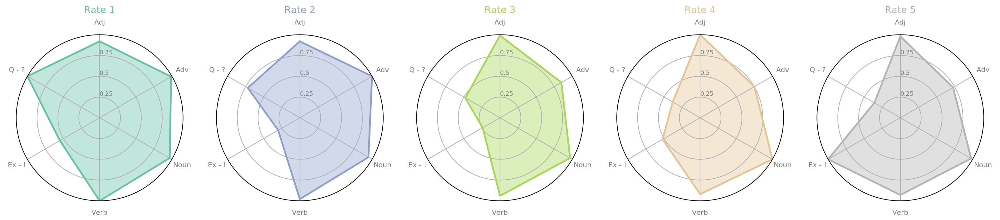

Review Analysis
Relationship between rating score and review
Rating score directly shows people’s feeling about the book but in review reader would give more precise about his attitude and opinion or suggestion. It’s intuitively to say that good score leads to positive review and bad score must come with negative review. In this part, we want to challenge this “instinct”.
Label reviewText － Intensive Analyzer
How to analysis review is a tricky question. Here, we choose to do it “easy” but effectively by scoring each sentence based on the sentiment strength. And after scaling it to 1-5, we treat the sentimental score as the “predicted” score for each review. We want to see if the sentiment difference directly reflect in the rating people scored.
The first two plots, where we divide the reviews into different categories, we want to show you the difference between predicted true score. The one on the left is the distribution of the difference which makes itself very clearly that for most of the review, the difference is small and the sentiment is connected with the score people give.
On the other hand, the right one tells us the story from another perspective, in which the distribution of the predicted score for each true score of review is presented. Red is the 1 star and yellow is 5 star. The box-plot shows that the higher the true score is, the higher the connection between sentiment and review is. If the reviewer gives high score, it’s very likely that he is going write something nice. However, reviewers who rate 1 star would not say something really mean or negative. There would be something more neutral text or even productive suggestions on the books which of course results in the big red box in the plot for each category.
Following is the plot for evaluating our prediction in the sense of averaging. The size of each circle corresponding to the number of books we have in our dataset. Most of the categories lie in the neighbourhood of the red line that represents the zero difference between prediction and real score. Category of small size are likely to get higher difference, like law, history and engineering. It’s good and relief for us to see big circles are not far away from our red line which makes our predicted score more reasonable.
Quantitative Statistics of Punctuation and Part Of Speech
So, how people write review after scoring? What’s the style of each rating groups of reviewers? To explain this, for each rating, we calculate the average percentage of adjective, adverb, noun, verb as well as exclamation point and question mark which are both highly relevant with people’s feelings. If we rescale the percent of each type to 0-1, we get following two plots. The first polar plot shows how different the style could be between each rating group and the second bar plots makes the difference readable in another way.
The style of each rating group is obvious. Exclamation point is used more often in 5-star reviews to show how good the book is; conversely, 1-star reviewers love to use question mark to express their feelings after not-happy reading experience. The lower the score is, the more the adverb is, which might results from the fact that negative words like “not” and“never” are all adverbs. For adjective and verb, there is also slightly difference. High score group use more adjectives while low score group like to use more verbs. But for noun usage, the difference is not that clear.

High Frequency Vocabulary Statistics for each Part Of Speech
After finishing our quantitative statistics of part of speech, we conducted a high frequency vocabulary statistics for each part of speech as well. We collected top 50 frequent words and relevant frequency for each part of speech: noun, verb; adjective and adverb. This part of research mainly aims at observing the word-use difference and sameness among 5 rates and pinpointing the emphasis of the review(user experience of Kindle, content of books etc.)
First of all, we computed the number of vocabulary presented in all 5 rates’ reviews for each part of speech. We observe that there are a large amount of high frequency words presenting in all 5 levels.
As everybody knows that the most sensitive word to express one’s emotion is adjective word and noun word can always provide us the main idea or topic of one’s statement. Hence, we had a look at the most frequent adjective and noun words presented in all 5 levels.
High Frequency Noun Words in Common
| woman | man | end | life | people | who |
| series | novel | thing | one | scene | love |
| romance | character | what | author | book | time |
| lot | story | way |
High Frequency Adjective Words in Common
| good | interesting | more | different | -PRON- | much |
| other | great | which | all | many | long |
| little | that | few | worth | free | new |
| short | such | hot | first |
From the two tables above, we found that words like book, story, character, romance, love, life have a truly high frequency in all the 5 rates’ reviews. All these words are used to describe a book and tell reader’s feeling and perception. Thus, we can conclude that most of the reviews are book content oriented instead of describing their user experience of Kindle.
Moreover, positive words like good, great are high frequency words in all 5 levels. However, common negative words like bad, worse are not presented in the table. With curiosity, we sampled some 1 and 2 rates’ reviews which contains positive words good. Surprisingly, about 6 among 10 reviews are totally positive or neutral reviews, there isn’t any negative adverb like not embellishing those positive adjective. Therefore, we can roughly claim that the sentiment of reviews are not positively correlative with the rating score, which perhaps leads a imprecise result for review’s sentiment analysis.
Sentiment Analysis with Machine Learning
As we have found that the review can give us a very reasonable predicted rating score compared to the real one, we decide to classify our review and train a prediction model for Amazon review, which means that we can generate a rating score automatically according to one’s review.
Sentiment analysis is a natural language processing method that allows us to obtain the general sentiment or “feeling” on some text. In order to implement this classification, we choose to use fastText text classification for our sentiment analysis. FastText is an open-source, free, lightweight library created by FacebookResearch that allows users to learn text representations and text classifiers and we trained a supervised learning model with it.
Preprocess review text:
Before train our model with the training data, we first did some data cleaning and preprocessing work.
Here is a graph to present our data preprocessing procedure.

Train model:
At the very beginning, we tried to classify our reviews into 5 classifiers just like the 5 rating level defined by Amazon. Nevertheless, we couldn’t obtain a rational accuracy no matter how we preprocess our data or modify our training model.
With curiosity, we had a look at serval review content, we found that we can hardly distinguish the reviews for rating score between 1-4. Hence, we decided to classify reviews only into 2 classifiers, we assigned all the 1-4 rating score's reviews into the same classifier.
Fit model & calculate accuracy:
Initially we don’t do any preprocessing work and fit reviews directly into our model, the prediction accuracy is only 63%. After several data cleaning and preprocessing work, our accuracy improve up to 75%.
Result reflection:
We admit that our result is not accurate enough. From our point of view, the main cause which leads to this accuracy level is the diversity of personal measuring standard.
With the help of previous analysis, we found the personal measuring standard is quite diverse among customer. For instance, some customers always give a 5 rating score for one product even if they are not totally satisfied with it, which means that they may add some negative words in full rating score reviews.
In order to conduct a more profound research on review classification, we plan to construct neural network models to improve the prediction accuracy in the future.
Relationship between category and review
小海扯淡！！说明为什么选择6类
6类关键词词云
小海扯淡！！说明为什么选择6类
各种类评论数量 平均长度分布
小海扯淡！！review长度 年度变化 ！！！！